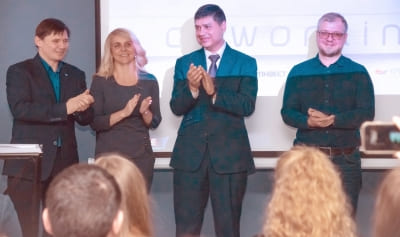
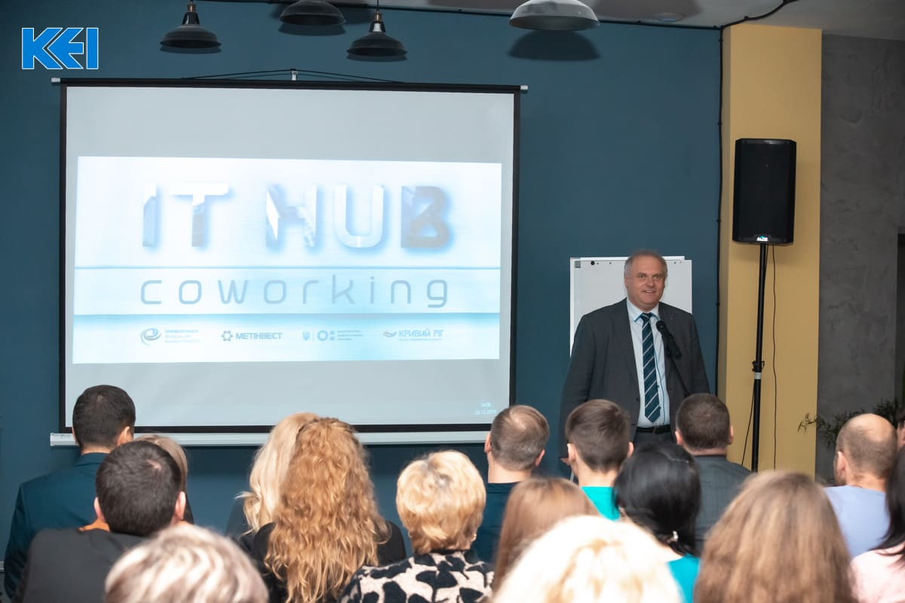
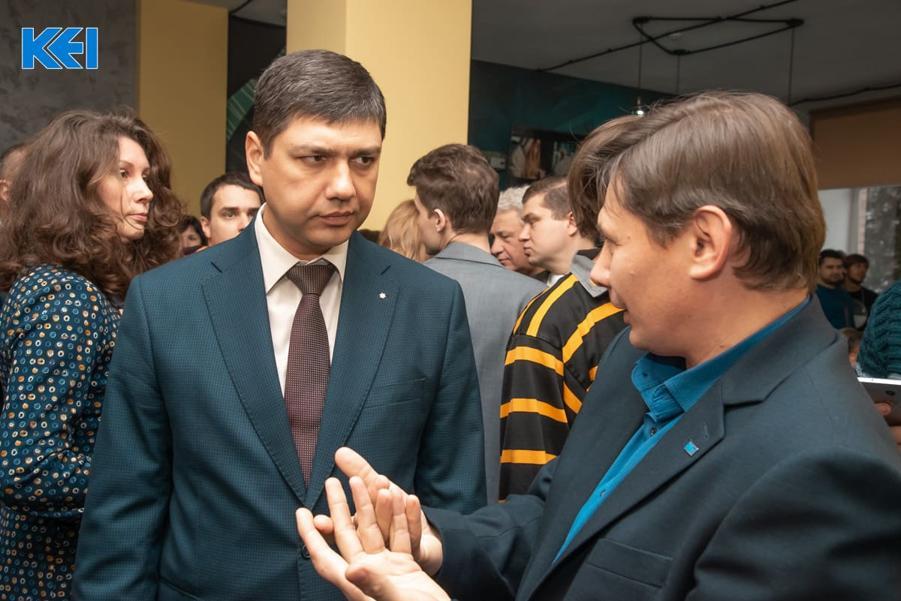

About IT Hub
 New technical appliances, the high-speed internet, the unique space in the center of the city: the IT hub and co-working were opened at the Kryvyi Rih Economic Institute.
The first IT-hub and co-working were opened at KEI with the financial support of the “Metinvest” company and the PO “Kryvyi Rih Foundation of Future”. The multifunctional working rooms are located in the separate block of the Kryvyi Rih Economic Institute on Liberation Square, 2.
The format of “flexible offices” for training and operation, the realization of meetings, conferences and trainings has already existed in Ukraine for several years. Such direction is new for Kryvyi Rih, that’s why the initiators of the project - the administration of the Kryvyi Rih Economic Institute – monitored the run of the operations carefully - from the creation of the project documentation to the testing of the technical capabilities of the site. The key partner at all the stages, from the re-training to the sound operation of the Hub and the Co-working, was the “Metinvest Digital” company – the leader of the IT market of Ukraine, specializing in digital transformation of business, the development of services and training programs for the higher educational establishments. The project’s Coordinator is the PO "Kryvyi Rih Foundation of Future".
 “Co-working is an important infrastructure project for Kryvyi Rih, and it’s also one of the tools that can influence the choice of students to stay in their native city, to search for the solutions, to communicate and to develop. This format is also convenient for both the entrepreneurs-beginners and for the experienced businessmen. It has the excellent technical possibilities and a good atmosphere to generate the ideas and to create the important projects for the city and the country”, - said Andrii Shaikan, the director of the Kryvyi Rih Economic Institute.
Everyone, who wishes, can attend IT hub and co-working. But for KEI students, the platform will become the additional place for the realization of the innovative studies and meetings with the stakeholders.
“The creation of such hub in Kryvyi Rih is the important stage of the educational system’s development in the city. The very important role is given preference to the space, where you want to be, where you wish to communicate and gain the new knowledge. This platform is an example of modern approaches to education for the higher educational establishments of the whole region”,- stressed Oleg Sharov, the general director of the Directorate of Higher and Adult Education of the Ministry of Education and Science of Ukraine.
The start of the operation was fixed by the signature of the Memorandum of Cooperation between the HEE, the “Kryvyi Rih Foundation of Future”, the “Metinvest Digital”, KEI and the municipal IT- community.
 “The Memorandum of Cooperation, signed today, will form the joint efforts’ basis of the public, business and educational institutions of Kryvyi Rih for the creation and development of the socially-significant IT-projects. The “Metinvest Digital” has the significant expertise in the innovative projects’ management in business. We are ready to share our knowledge and also to take an active part in the elaboration and introduction of the new technologies for the benefit of our city and region”, - commented Eldar Nazirov, the manager of information technologies of “Metinvest Digital”.
600 m2 of the useful area have been capitally repaired in the frames of the hub’s arrangement, on which the technically-equipped working rooms and the space’s mobile places are located now, with the capacity to accommodate from 7 to 100 people simultaneously. The cafeteria operates for the convenience of visitors.
The schedule of operation: from 8:30 to 21:00.
The telephone number for information: +38 097 309 41 92.